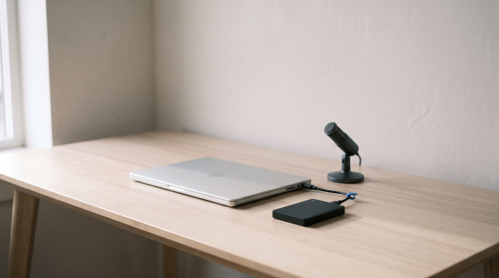
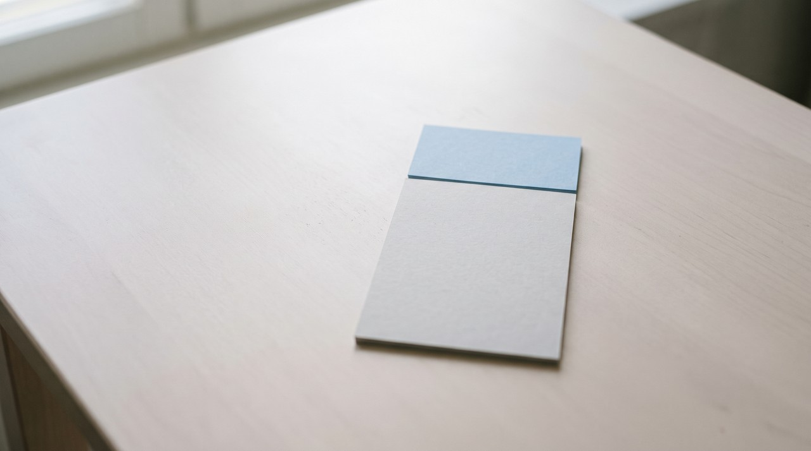

How to turn a live stream into shorts: clip your GTA 6 launch stream
When you have a finished live stream and want to make shorts out of it, save the stream as a local file, open it in a tool that finds the strong moments, keep the parts you like, and export each one as a tall 1080x1920 video with captions. Start from the recording on your own disk, not from a link, because a 3 hour stream is a large file and a link can fail.
Rockstar set the launch of GTA 6 for 19 November 2026, and many people planned to broadcast that night. If you streamed it, you end up with a recording that runs for 3 hours or more, and nobody is going to sit through the whole thing from the beginning again, including you. The strong moments are buried inside that file, and shorts are how new viewers find your stream after it has ended.
I want to clear up one mix-up first, because people search this phrase for two different things. "Live stream to shorts" can mean going live inside the Shorts feed with a tall vertical stream, and this page is not about that. I am talking about the other job, where your stream is already over and you want to cut it into short clips. What surprised me when I built this feature is how little of the actual work is cutting. Finding the few good minutes inside a 3 hour file is what eats up your time, and that is the part a tool can take off your hands.
This is not legal or financial advice. GTA 6 and all its footage belong to Take-Two and Rockstar Games, and this site is not connected to them in any way. Rockstar can remove footage at any time. Most people earn very little from clipping when they start out, and getting a streamer's permission does not make clips eligible for YouTube ads.
How do you get the stream into the tool?
I build a small desktop app called VideoDoc, and its Video to shorts tab accepts a video in three ways. You can drop the file onto the tab, paste the local file path, or paste a public link. For a full stream, I suggest pasting the file path. Using a path makes no duplicate copy on your drive, and a 3 hour recording is far too large to copy around for no reason.
| Where your stream is | What to add | What to know |
|---|---|---|
| Recorded on your own computer | The file path | The best choice. No copy is made and nothing has to download |
| On YouTube as a public video | The link | Links must be public. YouTube sometimes refuses the first try, so press Retry |
| On Twitch or Kick | The file, after you save your own stream to your computer | I have not tested Twitch or Kick links in this tab, so I will not tell you they work |
| Private or members only | The file | A link to a private video cannot be read |
If you have not gone live yet, turn on local recording inside your streaming program before you start. That way the video file is already sitting on your disk the moment you finish, and you do not have to rely on any website keeping your stream saved for you.

How does it find the best parts of a 3 hour stream?
The app listens to the entire recording on your own computer and logs the exact time of every spoken word. It also detects every scene cut and finds the faces, while measuring how loud the audio gets at each moment. From those signals, it suggests clips in four lengths: up to 30 seconds, 30 to 60 seconds, 1 to 2 minutes, and 2 to 3 minutes. No suggested short runs longer than 3 minutes.
Every suggestion comes with a score of 1 to 5 dots and a short reason written in plain words. The reason might say that the clip opens with a question, that it forms a complete thought, that your voice sounds lively, or that there is a big moment in the sound. That last signal matters a lot for a game stream, because during long stretches where you are focused on playing and barely speaking, the app picks moments based on the sound and the scene cuts and not on the words.
You should treat those dots only as a starting list to save time. Watch every suggested clip before you export it, because the app has no idea what is happening in the game. It can hear that you shouted into your microphone, but it cannot tell if that was a rare game moment or you accidentally knocking your drink over.
How do you keep your facecam in a tall video?
A normal stream is wide and a short is tall, so part of the picture has to be cropped or arranged differently. The tab includes a row of layout buttons to handle this: Auto, Follow face, Whole picture, Cam and screen, Cam and game, and Your frame. When you have gameplay with a webcam in the corner, the tab places your facecam on top and the full game picture underneath, so nothing on your screen gets cut off. If you prefer a tighter look, Cam and game zooms into the game.

- Add the recording. Paste the file path of your stream. On the first run the app downloads its speech engine once, about 486 MB for the Balanced one.
- Read the suggestions. They sit on the left with the best ones first, each with its dots and its reasons.
- Fix the edges. Drag the thick handles on the timeline to trim a part. The edges snap to whole words, so no word is cut in half.
- Pick the layout. A big phone preview plays the short the way it will look, next to the original video with the frame drawn on it.
- Check the captions. Word by word captions are on by default, in three styles called Bold, Clean and Big. Read them once, because game names and slang are where a speech engine makes mistakes.
- Export. Tick the parts you want and export them all at 1080x1920.
All of this processing happens locally on your own Windows PC or Apple Silicon Mac. Your 3 hour file stays on your computer, so you do not have to sit around waiting for a huge upload to finish.
What does the free version stop at?
If you use the app without a Pro key, the shorts tab accepts videos up to 20 minutes long and places a small "Made with VideoDoc" mark on each exported clip. A launch stream is much longer than 20 minutes, so you have two honest choices here. You can trim your recording into chunks of 20 minutes or less and process only the sections you care about, or you can buy Pro, which removes the length limit and the mark for a one time payment.
I want you to know about that limit upfront before you install anything on your machine. If you roughly remember when the best part of your stream happened, cutting out those 20 minutes and running them in Lite is a fair way to test the whole workflow on your own footage.
I have not timed a full 3 hour stream for this page, so I am not going to give you a guess for how long the listening step takes. The speed depends on your computer hardware. It runs as a job with a progress bar and a Cancel button, so you can walk away and come back when it finishes.
What is the free way, and where does it stop?
You can also do this entire process without paying for anything. You can open your recording in a free video editor such as CapCut, crop the wide frame into a tall one, and turn on automatic captions, though which caption tools stay free changes quite often. Twitch also offers its own clip editor for tall video, which TechCrunch reported in May 2023, and it is fine if you already clipped a moment while you were live.
The main limit of the free route is finding the moments. Nothing marks the strong parts for you, so you have to scrub through all 3 hours by hand, and that easily takes up an entire evening. If you only want two clips and you already remember where they are, stick with the free tools. If you stream every week, the finding is the part worth handing to a tool. I wrote a second method for doing that, finding clip moments by reading the transcript, and you can see the general workflow in GTA 6 shorts from one long video.
Can you clip someone else's launch stream?
If you are clipping someone else's stream, do it only with their written permission. That permission can be an email, a direct message, or their public clip policy, saved with the date you checked it. Even then, permission solves less than most people assume. YouTube's channel monetization policies state this clearly about reused content: "This policy applies even if you have permission from the original creator." So a streamer's yes makes the clip allowed, but it does not make it eligible for ads. To qualify for ads, each clip needs your own commentary or your own story added to it, and putting captions on screen alone does not count.
Rights to the game footage are a separate issue from the streamer's permission. A streamer can give you permission to use their face, voice, and commentary, but they cannot grant you rights to Rockstar's game. Rockstar's policy on posting its material covers non-commercial fan use, and those same rules apply to your own stream too. I explain what these clips can and cannot earn on a separate page, what really pays from GTA 6.
One quick warning while you look for footage: if any site offers you a GTA 6 PC version or an early access build to record from, it is fake. Rockstar's own page lists only PlayStation 5 and Xbox Series X|S.
To be completely plain about the limits: VideoDoc does not understand the game, so it cannot tell a rare event from an ordinary one, and you still need to watch every clip it suggests. The app does not add your commentary, and it cannot make a clip eligible for ads. I have not tested Twitch or Kick links inside the shorts tab, and nothing on this page was tested on actual GTA 6 footage. Also, if background music was playing during your stream, that music stays in the exported short.
Find the good minutes in your last stream.
Try it on a recording you already have. The tab is explained on the Video to shorts page. Pro is a one time payment, and the plans are on the home page. GTA 6 week: the Pro button below adds code GTA6, which takes 50% off for the first 100 buyers.
Quick questions
Can I turn a Twitch or Kick stream into shorts?
Yes, as long as you work from the video file. Save your stream recording to your computer and load that file or paste its path into the app. I have not tested Twitch or Kick links in the shorts tab, so using your local file is the reliable way.
How long can a short from a stream be?
The app suggests moments up to 3 minutes long and never longer, grouped into four lengths that begin at up to 30 seconds. Once a clip is suggested, you can always trim it shorter on the timeline.
Do I need Pro for a full stream?
If you want to drop the whole recording in at once, yes, because Lite stops at 20 minutes. Otherwise, you can cut your stream into pieces of 20 minutes or less and process those in Lite, which leaves a small mark on each export.
Tonight, grab the local recording of your last stream, paste its file path into the shorts tab, and watch the first five suggestions before you decide how you want to edit them. Sources: VideoDoc's v0.5.0 release notes, YouTube's channel monetization policies page, Rockstar's policy on posting copyrighted material and its GTA VI page, and TechCrunch's May 2023 report on Twitch's clip editor.

I am a telecom engineer and business analyst from Pakistan, and I build small honest desktop tools under Designesh. I made VideoDoc because I wanted my AI to read the lectures I study from. Everything here is tested on my own machine first.